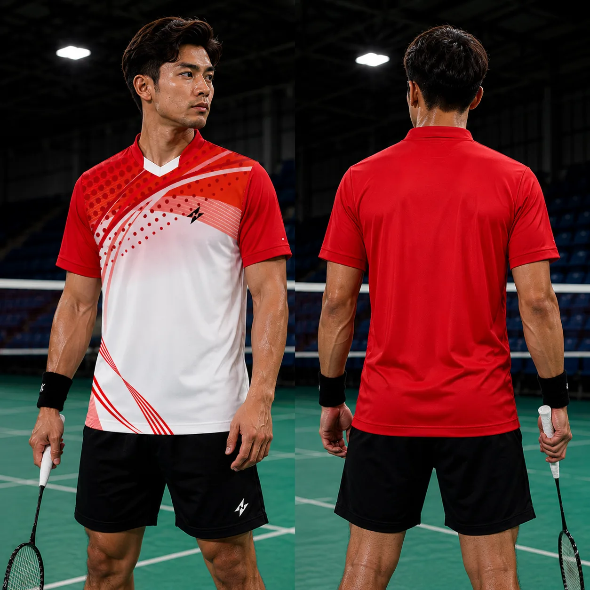
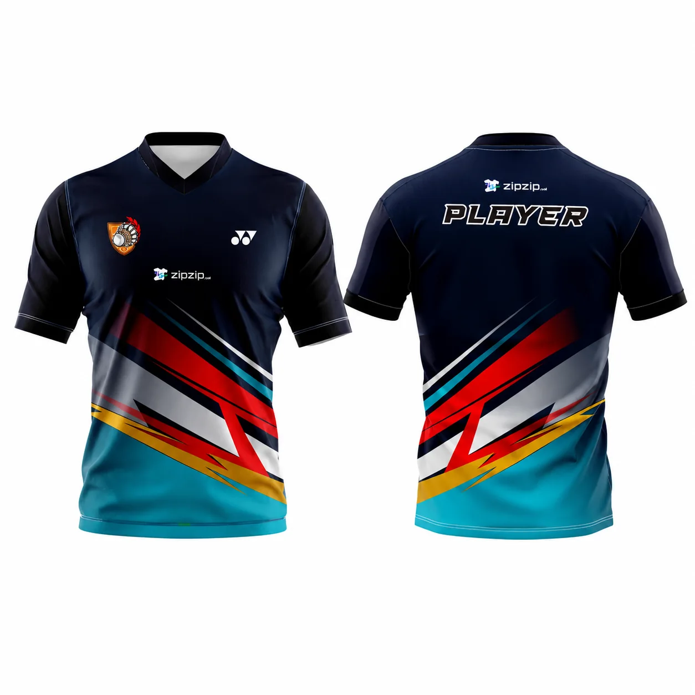
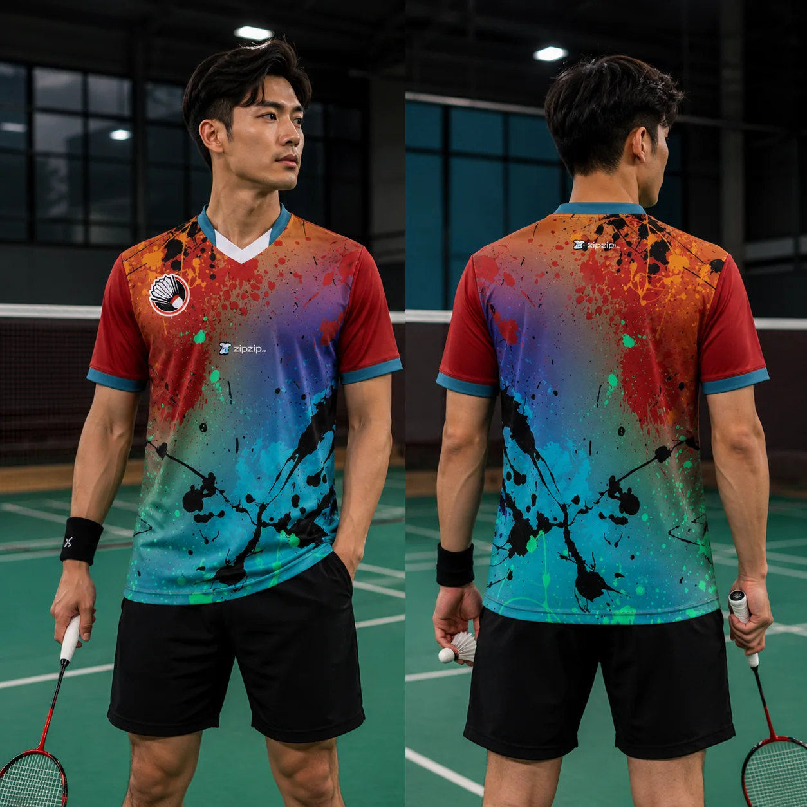

Bikin Jersey Satuan Bandung Tanpa Harus Pesan Banyak menjadi topik penting bagi tim olahraga, sekolah, komunitas, perusahaan, penyelenggara event, maupun individu yang ingin memiliki seragam dengan identitas sendiri. Di Zipzip, pendekatan pembuatan jersey tidak berhenti pada mencetak desain ke kain. Setiap order perlu dipertemukan dengan kebutuhan aktivitas, karakter pemakai, target anggaran, jumlah pesanan, deadline, dan standar visual yang diinginkan.
Pencarian bikin jersey satuan bandung biasanya muncul ketika calon pembeli sudah memiliki kebutuhan yang cukup konkret: ingin mengetahui bahan yang cocok, opsi desain, estimasi proses, metode printing, pilihan ukuran, serta bagaimana memastikan hasil akhir terlihat rapi. Karena itu, halaman ini disusun sebagai panduan praktis agar Anda memahami hal-hal yang perlu diputuskan sebelum masuk produksi.
Apa yang Dimaksud dengan Bikin Jersey Satuan Bandung Tanpa Harus Pesan Banyak
Secara sederhana, layanan bikin jersey satuan bandung adalah proses membuat pakaian olahraga berbasis kebutuhan pelanggan, bukan mengambil produk jadi yang desainnya sama untuk semua orang. Identitas tim dapat diwujudkan melalui kombinasi warna, pattern, logo, nama pemain, nomor, sponsor, dan detail kerah atau lengan. Pada sistem full printing sublimasi, elemen grafis dapat dirancang menyeluruh hingga ke panel depan, belakang, dan lengan.
Custom yang baik bukan berarti setiap detail harus rumit. Justru desain yang efektif sering memakai hierarki visual yang jelas: warna utama, warna aksen, logo klub, nomor yang mudah terbaca, dan sponsor yang tidak saling berebut perhatian. Prinsip ini membuat jersey tampak profesional saat dipakai langsung maupun difoto untuk dokumentasi dan media sosial.
Jenis Jersey yang Bisa Dibuat
Zipzip dapat menangani kebutuhan jersey untuk beragam aktivitas seperti badminton, sepak bola, futsal, running, padel, voli, basket, e-sport, fun bike, komunitas otomotif, gathering perusahaan, dan event sekolah. Masing-masing aktivitas memiliki kebutuhan berbeda. Jersey running menuntut rasa ringan dan manajemen keringat, sedangkan jersey bola dan futsal biasanya membutuhkan keseimbangan antara durability, fleksibilitas, serta ventilasi.
Untuk badminton dan padel, banyak pelanggan menyukai potongan yang clean dan modern dengan kain yang tidak terasa berat ketika bergerak. Untuk komunitas atau corporate event, ruang sponsor dan keterbacaan logo sering menjadi prioritas. Karena itu jangan hanya memilih desain berdasarkan tampilan; pertimbangkan juga bagaimana jersey bergerak bersama tubuh.

Memilih Bahan Jersey yang Tepat
Bahan merupakan fondasi kenyamanan. Polyester sportswear tersedia dalam banyak struktur: permukaan halus, micro mesh, bird-eye, dry-fit, jacquard, atau variasi knit dengan tingkat ketebalan berbeda. Tidak ada satu bahan yang selalu paling baik untuk semua kebutuhan. Kain yang sangat tipis mungkin terasa ringan untuk lari, tetapi belum tentu menjadi pilihan terbaik untuk aktivitas dengan gesekan tinggi atau kebutuhan tampilan yang lebih structured.
Sebelum memilih, tentukan empat hal: intensitas aktivitas, kondisi indoor atau outdoor, target rasa kain, dan anggaran. Mintalah contoh bahan bila diperlukan. Lihat kain di bawah cahaya, tarik perlahan untuk mengecek elastisitas, dan perhatikan apakah permukaan terlalu transparan ketika diregangkan. Keputusan berbasis sampel jauh lebih aman daripada hanya mengandalkan nama bahan.
Printing Sublimasi, Sablon, dan Personalisasi
Full sublimation populer untuk jersey karena tinta berpindah ke serat polyester melalui panas. Hasilnya tidak membentuk lapisan karet tebal di permukaan, sehingga pattern kompleks, gradasi, logo, nama, dan nomor dapat menjadi satu kesatuan desain. Untuk kebutuhan tertentu, teknik lain seperti polyflex atau transfer juga dapat digunakan, misalnya untuk penambahan elemen setelah garment jadi.
Pemilihan teknik harus mengikuti desain dan jenis kain. Logo kecil dengan detail tipis membutuhkan perhatian berbeda dibanding nomor besar. Warna neon di monitor juga tidak selalu dapat direplikasi persis di kain karena layar menggunakan cahaya RGB sedangkan proses cetak memiliki gamut berbeda. Karena itu approval desain sebaiknya menilai komposisi dan arah warna secara realistis.
Alur Produksi dari Brief sampai Jersey Jadi
Workflow yang rapi dimulai dari brief. Pelanggan memberikan jenis jersey, jumlah, data ukuran, referensi warna, logo, nama/nomor, dan deadline. Setelah itu tim desain menyiapkan mockup atau menyesuaikan file yang sudah ada. Tahap berikutnya adalah approval visual dan pengecekan data personalisasi. Setelah file dikunci, desain dipersiapkan ke pola produksi, dicetak, dipindahkan ke kain, kemudian masuk cutting dan sewing.
Setelah jahit, quality control memeriksa bagian penting seperti sambungan panel, posisi kerah, kondisi print, kebersihan jahitan, ukuran label, dan kelengkapan nama/nomor. Terakhir, produk dipacking berdasarkan kebutuhan order. Alur ini menjelaskan mengapa revisi desain setelah produksi berjalan berpotensi menambah biaya dan waktu.
Cara Menyiapkan Desain agar Hasil Printing Maksimal
Jika Anda sudah memiliki desain sendiri, gunakan file resolusi tinggi. Logo sebaiknya dalam format vector seperti AI, EPS, PDF vector, atau SVG; PNG transparan beresolusi besar masih dapat digunakan untuk kondisi tertentu. Hindari mengambil logo kecil dari screenshot WhatsApp karena tepinya dapat pecah ketika diperbesar.
Perhatikan pula area jahitan. Garis yang harus bertemu dari panel depan ke samping perlu toleransi karena kain adalah material fleksibel dan proses jahit memiliki deviasi. Elemen penting seperti teks, nomor, dan logo jangan diletakkan terlalu dekat dengan batas pola. Desainer produksi yang berpengalaman akan menyesuaikan artwork agar tetap aman ketika kain dipotong dan dijahit.

Ukuran dan Size Breakdown
Kesalahan ukuran adalah salah satu masalah paling mudah dicegah. Jangan menentukan ukuran hanya dari kebiasaan memakai label M, L, atau XL dari brand lain. Setiap produsen dapat memiliki standar berbeda. Gunakan size chart Zipzip dan bandingkan dengan jersey yang saat ini nyaman dipakai, terutama pada lebar dada dan panjang badan.
Untuk order tim, kumpulkan data dalam satu spreadsheet sederhana: nama, nomor, ukuran, model lengan bila ada, dan catatan khusus. Tunjuk satu koordinator untuk mengunci data. Hindari perubahan melalui banyak chat terpisah karena meningkatkan risiko data tertukar. Setelah size breakdown disetujui, simpan versi final sebagai acuan bersama.
Berapa Lama Proses Pembuatan Jersey?
Durasi produksi bergantung pada jumlah, tingkat kompleksitas desain, antrean produksi, ketersediaan bahan, revisi, dan kebutuhan finishing. Karena itu waktu yang paling aman dihitung sejak desain dan data dinyatakan final, bukan sejak chat pertama. Bila jersey dipakai untuk turnamen atau event, sediakan buffer beberapa hari untuk distribusi internal dan kemungkinan penyesuaian kecil.
Untuk kebutuhan mendesak, komunikasikan tanggal wajib diterima sejak awal. Tim produksi dapat menilai apakah slot memungkinkan. Menjanjikan waktu terlalu singkat tanpa melihat kapasitas adalah risiko; pendekatan profesional adalah memberikan jadwal yang dapat dipertanggungjawabkan serta meminta pelanggan responsif pada tahap approval.
Faktor yang Menentukan Harga
Harga jersey custom dipengaruhi oleh bahan, jumlah, konstruksi model, detail kerah, variasi panel, personalisasi, serta tingkat kerumitan produksi. Pada sublimasi, banyak warna biasanya tidak dihitung seperti sablon manual per warna, tetapi desain kompleks tetap membutuhkan waktu prepress dan kontrol lebih tinggi. Jumlah produksi juga berpengaruh pada efisiensi setup.
Untuk membandingkan penawaran, jangan melihat angka akhir saja. Pastikan Anda membandingkan spesifikasi yang sama: bahan, jenis printing, model, jumlah, apakah desain termasuk, apakah nama dan nomor termasuk, serta bagaimana kebijakan revisinya. Penawaran yang tampak murah bisa berubah mahal bila banyak komponen belum masuk perhitungan awal.
Tips Memilih Vendor Jersey Custom di Bandung
Vendor yang baik dapat menjelaskan proses dengan bahasa sederhana, tidak hanya mengirim daftar harga. Periksa contoh hasil real, mockup, kerapian jahitan, serta bagaimana mereka merespons pertanyaan teknis. Tanyakan prosedur approval desain dan data ukuran. Semakin jelas proses sebelum bayar dan produksi, semakin kecil ruang miskomunikasi.
Perhatikan juga konsistensi brand. Vendor yang terbiasa menangani jersey custom akan memahami bahwa satu tim membutuhkan tampilan seragam meskipun ukurannya berbeda. Mereka harus menjaga placement, proporsi logo, warna, dan detail visual agar tidak terlihat acak ketika seluruh anggota berdiri bersama.

Kesalahan Umum yang Sebaiknya Dihindari
Kesalahan umum meliputi mengirim logo beresolusi rendah, terlambat mengunci ukuran, mengganti nomor setelah file produksi dibuat, memilih warna hanya dari layar ponsel, dan menetapkan deadline tanpa buffer. Ada juga kasus desain terlalu penuh: terlalu banyak sponsor, font berbeda, efek visual, dan pattern yang membuat jersey sulit dibaca.
Solusinya adalah menyederhanakan keputusan. Kunci palet warna, tetapkan satu sumber data, gunakan file logo terbaik, beri ruang aman di desain, dan lakukan satu putaran pengecekan menyeluruh sebelum approval. Lima menit tambahan untuk verifikasi bisa menghemat waktu produksi yang jauh lebih besar.
Kenapa Zipzip untuk Kebutuhan Bikin Jersey Satuan Bandung
Zipzip memposisikan layanan bikin jersey satuan bandung sebagai kolaborasi antara kebutuhan pelanggan dan kesiapan produksi. Tujuannya bukan hanya membuat jersey terlihat bagus di mockup, tetapi memastikan desain dapat diterapkan secara masuk akal pada kain, nyaman digunakan, dan tetap konsisten dalam satu batch.
Fokus utama pesanan satuan adalah fleksibilitas. File desain harus tetap dipersiapkan seperti produksi tim, tetapi jumlah, nama, nomor, dan ukuran dapat dibuat lebih personal. Konfirmasi minimum order, biaya setup, serta kemungkinan warna hasil produksi sejak awal agar ekspektasi tetap realistis. Komunikasi dapat dimulai dari brief sederhana. Anda tidak harus memiliki file desain final; kirim inspirasi, warna, logo, jenis olahraga, jumlah, dan target pemakaian. Tim kemudian dapat membantu mengarahkan spesifikasi yang lebih siap produksi.
Checklist Sebelum Order
Sebelum mengirim order, siapkan informasi berikut agar konsultasi lebih cepat:
- Jenis olahraga atau fungsi jersey.
- Jumlah pcs dan estimasi size breakdown.
- Referensi warna serta desain yang disukai.
- Logo tim, sponsor, nama, dan nomor bila ada.
- Model kerah dan lengan yang diinginkan.
- Target budget per pcs atau total budget.
- Tanggal jersey harus sudah diterima.
- Alamat pengiriman dan nama koordinator order.
Data tidak harus sempurna di awal. Checklist ini membantu tim produksi memahami prioritas sehingga rekomendasi yang diberikan lebih relevan dan tidak berputar-putar.
Cara Membuat Brief Produksi yang Efektif
Brief yang efektif tidak perlu panjang, tetapi harus dapat menjawab keputusan produksi. Untuk kebutuhan bikin jersey satuan bandung, mulai dengan satu kalimat mengenai tujuan pemakaian, misalnya untuk turnamen internal, kompetisi resmi, komunitas mingguan, merchandise, event perusahaan, atau kebutuhan personal. Setelah itu tuliskan jumlah peserta dan kisaran ukuran. Informasi konteks ini membantu tim menilai apakah prioritas utama sebaiknya pada kenyamanan, tampilan premium, efisiensi biaya, atau kecepatan produksi.
Berikutnya, pisahkan antara elemen yang wajib dan elemen yang masih fleksibel. Contoh elemen wajib adalah warna identitas klub, logo utama, sponsor tertentu, atau nomor pemain. Elemen fleksibel dapat berupa pattern latar, bentuk garis, warna aksen kedua, model kerah, atau treatment nama. Pemisahan ini membuat proses desain lebih cepat karena desainer tahu bagian mana yang tidak boleh berubah dan bagian mana yang masih bisa dieksplorasi.
Untuk referensi visual, dua sampai lima contoh yang terarah biasanya lebih berguna daripada mengirim puluhan screenshot. Jelaskan hal yang Anda suka dari setiap referensi: komposisi warna, bentuk pattern, posisi nomor, gaya kerah, atau kesan keseluruhan. Jangan meminta menyalin desain milik tim lain secara persis; gunakan referensi sebagai arah untuk membuat identitas yang lebih khas. Bila memiliki panduan brand, sertakan kode warna, font, dan file logo resmi.
Terakhir, tentukan jalur approval. Idealnya hanya satu koordinator yang mengumpulkan masukan anggota tim lalu mengirim keputusan final. Saat terlalu banyak orang memberi revisi langsung, desain mudah bergerak bolak-balik dan data personalisasi lebih rentan tertukar. Dengan alur komunikasi satu pintu, proses bikin jersey satuan bandung menjadi lebih cepat, terdokumentasi, dan mudah dicek sebelum produksi berjalan.
FAQ Jersey Custom Bandung
Apakah bisa konsultasi desain sebelum order?
Bisa. Kirim referensi, logo, warna, jenis olahraga, jumlah, dan target pemakaian melalui WhatsApp agar tim dapat mengarahkan opsi yang sesuai.
Apakah nama dan nomor bisa berbeda setiap jersey?
Bisa disiapkan sebagai personalisasi. Data harus dikumpulkan dalam format yang jelas dan dikunci sebelum file produksi dibuat.
Apakah bisa membuat jersey untuk badminton, futsal, bola, padel, dan lari?
Ya, spesifikasi bahan dan pola dapat disesuaikan dengan jenis aktivitas dan kebutuhan tim.
Bagaimana cara mendapatkan estimasi harga?
Kirim jumlah, jenis jersey, desain/referensi, kebutuhan personalisasi, dan deadline. Estimasi lebih akurat bila spesifikasi dasarnya jelas.
SIAP BUAT JERSEY CUSTOM?
Kirim brief dan target kebutuhan Anda. Tim Zipzip akan membantu mengarahkan spesifikasi.